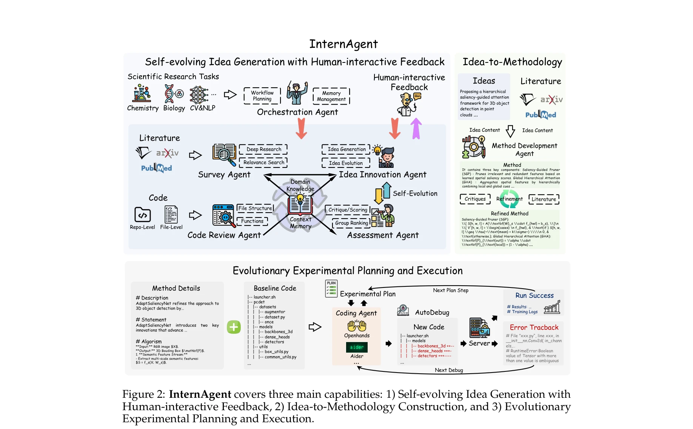
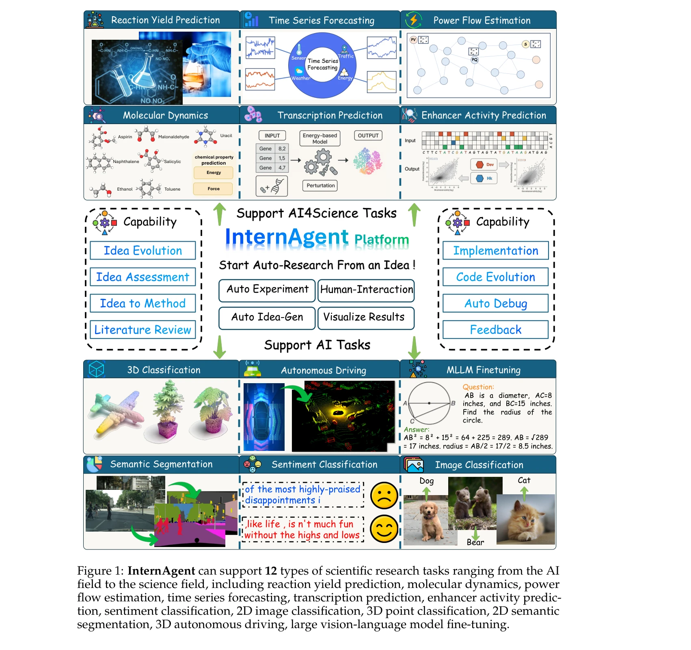

저자: InternAgent Team, Bo Zhang, Shiyang Feng, Xiangchao Yan, Jiakang Yuan, Runmin Ma, Yusong Hu, Zhiyin Yu, Xiaohan He, Songtao Huang, Shaowei Hou, Zheng Nie, Zhilong Wang, Jinyao Liu, Tianshuo Peng, Peng Ye, Dongzhan Zhou, Shufei Zhang, Xiaosong Wang, Yilan Zhang | 날짜: 2025-05-22 | URL: https://arxiv.org/abs/2505.16938

Figure 2: InternAgent covers three main capabilities: 1) Self-evolving Idea Generation with
InternAgent는 가설 생성부터 검증까지 폐루프 구조를 가진 다중 에이전트 프레임워크로, 12가지 과학 연구 작업에서 자동화된 과학 연구(ASR)를 수행한다. 인간 전문가의 피드백 인터페이스를 통해 상호작용성을 제공하면서 수개월 소요되는 연구를 수십 시간 내에 완료한다.

Figure 1: InternAgent can support 12 types of scientific research tasks ranging from the AI
Figure 2: InternAgent covers three main capabilities: 1) Self-evolving Idea Generation with
총평: InternAgent는 자동 과학 연구의 폐루프 구현과 다중 도메인 적용성을 입증한 의미 있는 시스템으로, 인간-AI 협업 인터페이스와 광범위한 실험 검증을 통해 설득력 있는 성과를 보여준다. 다만 생성 아이디어의 과학적 근본성과 물리적 실험 환경으로의 확장 가능성에 대한 추가 검증이 필요하다.